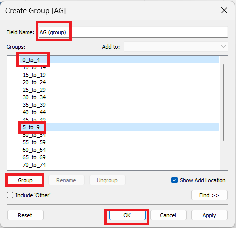

Take-Home_Ex01
The Task
The task is to use Age-Sex pyramid to create analytical visualisation to reveal the structure of population by gender and age group.
The data used in this task is ’Singapore Residents by Planning Area / Subzone, Age Group, Sex and Type of Dwelling, June 2022’, which can be found on Department of Statistics, Singapore website. Navigate to ‘Find Data > Search by Theme > Population > Geographic Distribution > Latest Data’ under Population Trends or use the linkhttps://www.singstat.gov.sg/find-data/search-by-theme/population/geographic-distribution/latest-data to directly go to the page.
This data is used to find the demographic structure of Singapore at planning level by using age-sex pyramid method in trellis display style. Out of all the available planning level areas in the data set, I have decided to choose these 9 areas for trellis style display - ‘Ang Mo Kio’, ‘Bedok’, ‘Chao Chu Kang’, ‘Jurong West’, ‘Pungol’, ‘Sengkang’, ‘Tampines’, ‘Woodlands’, ‘Yishun’.
Procedure
Step 1: Get the data
Navigate to https://www.singstat.gov.sg/find-data/search-by-theme/population/geographic-distribution/latest-data and download the csv version of Singapore Residents by Planning Area / Subzone, Age Group, Sex and Type of Dwelling, June 2022 from under Population Trends.
Transfer this csv to appropriate location inside folder where the tableau file will also be stored so that they can be easily accessed.
Step 2: Create New tableau Book
Open tableau and Click on File > New.
Save this book to the same location as csv file.
Click on Connect Data and pick text file.
A prompt will appear, select the csv file and click open.
Now the data from the csv file is available to be used in this workbook. Some sample fields and data from the csv will also appear after the successful data load.
Click on Sheet 1 to enter Sheet1 where the Age-Sex Pyramid will be created.
Rename Sheet 1 to ‘Age-Sex Pyramid Singapore Planning Area’ for better understanding of the visualisation.
Step 3: Create Visualisation
1. Create Sum of Males and Females
Create Calculated Fields from the left pane as shown:
For Males,
IF [Sex] = "Females"
THEN [Pop]
END
For Females, IF [Sex] = "Females"
THEN [Pop]
END
2. Create Age Group
Create a age group of 10 years instead of 5 years for better visualisation with following steps.
Select 2 groups at a time, click on Group and give it a name, e.g. Select 0_to_4 and 5_to_9 and name it 0-9. Rename common field name for this to AgeGroup

Create initial visualisation
Drag and drop the Sum of females and males to Columns and AgeGroup to rows
Right click on the X axis where Males is written and click on Edit Axis, there will be option to reverse axis. Check that box and return back.
Now we have a pyramid but they both are in same color.
3. Change Color Code for better visualisation
From the options as seen below change the color to get different color for Males and Females
4. Create Row and Column Axis for trellis display
Create a Parameter NumberOfColumns as 3 to get 3 columns. To create a Parameter, we get the option right next to create calculated field. It should look like this:
Create 3 calculated Fields, similar to as done for Sum of Males and Females.
For Column,
IF [Index] % [NumberOfColumns] = 0
THEN [NumberOfColumns]
ELSE [Index] % [NumberOfColumns]
END
For Row
INT(([Index]-1)/[NumberOfColumns])
For Index
INDEX()
Select both the Rows and Columns and convert it to Discrete
Drag Rows to Rows and Columns to Columns located to top bar to add it on view
Drag PA to Details in Marks (All) Section.
Compute Row and Column using PA to get the trellis view.
5. Filter Planning Area to select 9 locations
Drap PA to filter and select the 9 locations and click OK to filter.
6. Remove Row and Column Header from visualisation for cleanup.
7. Create Label for each cell Location and add Visualisaion enhancements
Create another Calculated field called PALabel as
IF FIRST()=0 THEN WINDOW_MAX(ATTR([PA])) END
Add it to SUM(Females) marks.
Add Sum(Females) to Sum(Females) marks and Sum(Males) to Sum(Males) marks respectively and adjust the visualisation using the tools inside the Marks until satisfied.
8. Extract data before uploading to Tableau Public
Once ready to upload the visualisation to Tableau Public, extract data as shown. Best practice is to provide location same as other files of the same project.
10. Publish to Tableau Public
Select Publish Workbook as shown to publish the visualisation to Tableau Public
Age-Sex Pyramid Visualisation for Singapore
The visualisation can be found here. Please use full screen for clearer image.

Patterns Revealed
The Age-Sex Pyramid for Singapore Planning Area has a lot of significant patterns which can be analysed. There are multiple things to consider before exploring this pyramid. E.g., the pattern between Males and Females, Pattern between different Age Groups, Pattern in between different Planning Areas.
Considering all the available data in age-sex pyramid, there are locations with significantly less population compared to other locations. It can mean that location also plays a key role in selecting the place of residence in different age groups and genders.
In the pyramid, looking closely at the 90 and over age group, there is one significant pattern, there are 2 to 3 times more females than males which can act as a proof to the hypothesis of ‘Females live longer than Males’.
There are many age groups where there are more females than males, it can be helpful in calculating the sex ratio of the area. Most of the places have similar number of Males and Females, which contributes to good sex ratio of the country population.
Another pattern that comes out of this pyramid is that there are a lot more people in the age group of 30 and above and a lot less younger people which can be a representation of the aging population.
These are all the patterns which were found but it is not the end. There can be more. Also, using more data or more fields, it is highly possible to add new layers and see different patterns which can result in more meaningful observations.